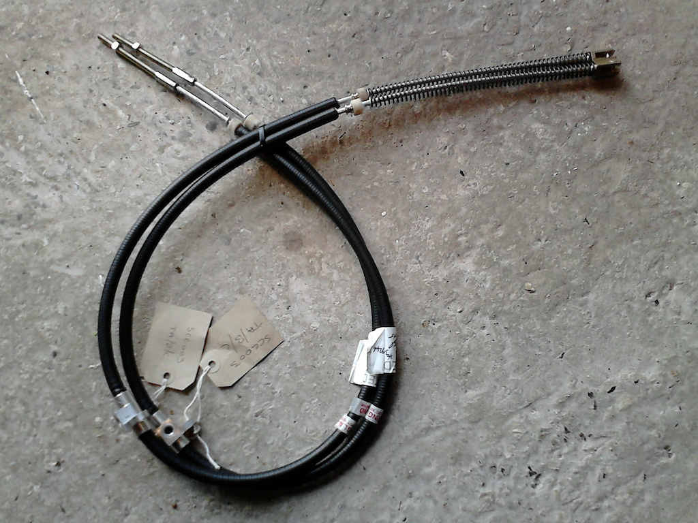
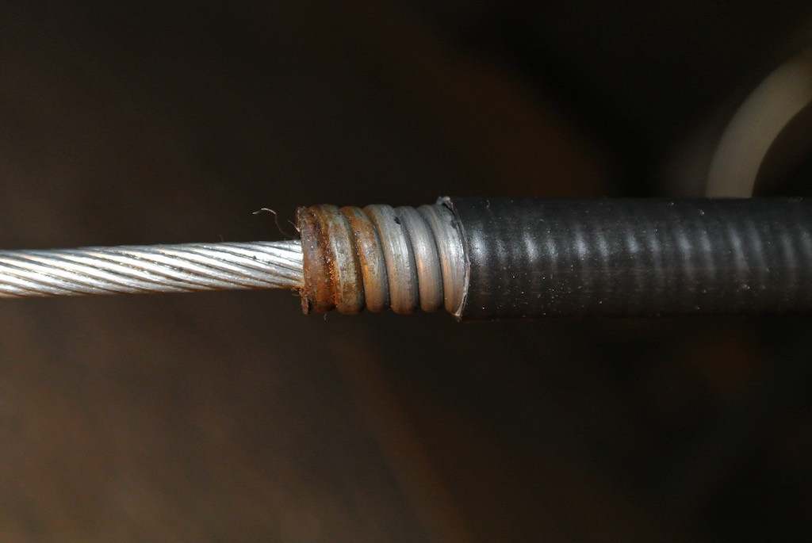
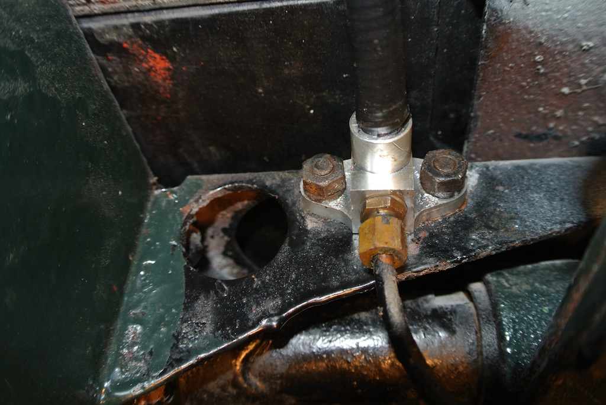
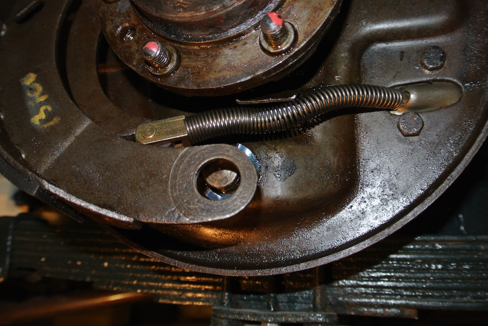
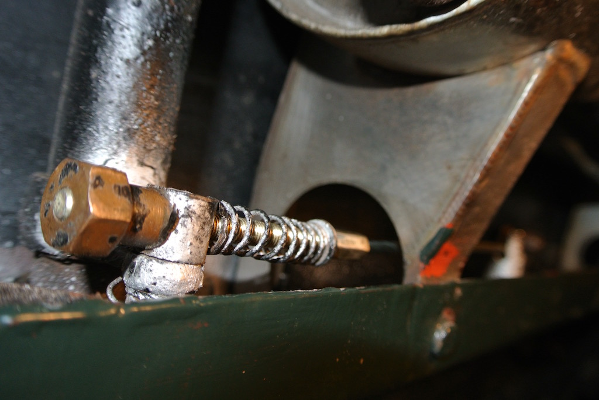
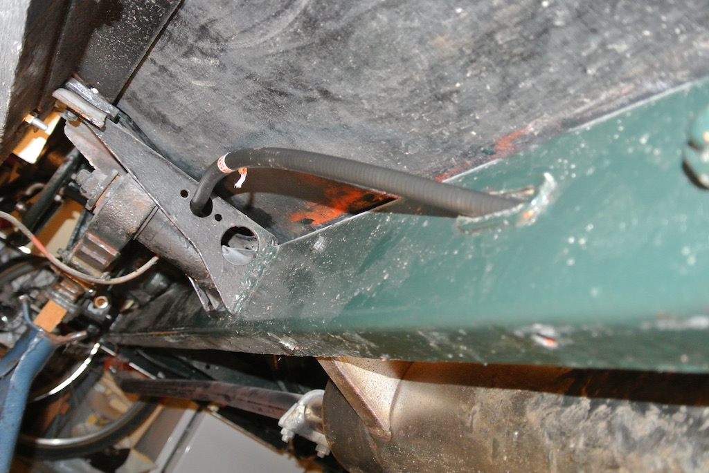

Handbrake Cables
As noted on the TC4985 home page, Colin Cripps, while replacing the brake master cylinder, commented that the handbrake cables had stretched and really needed replacing. A couple of day's work turned out to take an elapsed time of two months! This was partly due to other events, such as a visit leading up to Christmas of our Son and his family and Christmas itself, and my lack of experience, requiring the removal and refitting of at least one of the cables twice!
Firstly, let's look at what is involved (click on any image to view a larger version). In the diagram the cable is clearly item number 1. It is actually quite a complex cable. On the left it hooks on to item 12, the levers inside the the brake drum that move the shoes and passes through the backplate, via a small plate (item 9). The diagram shows an inner and an outer plate, but, as can be seen from the first photo below, only the outer plate is installed. A spring stays on the inside and the cable enters a spiral metal sheath on the outside of the drum, which soon enters a greasing point (the tube and grease nipple are item 11 on the diagram). The sheath then passes through the chassis and on to the fixing point (item 6) on the inside of the chassis leg. On the diagram this fixing point looks small, but it has a hole through it that, half way through, is big enough to take the sheath and then only big enough to take the cable. A slot allows the cable to be dropped into the hole. The cable then continues to the fixing point (item 5) on the handbrake lever (item 14), with a threaded rod, spring, washer and nut.
In the diagram the cable is clearly item number 1. It is actually quite a complex cable. On the left it hooks on to item 12, the levers inside the the brake drum that move the shoes and passes through the backplate, via a small plate (item 9). The diagram shows an inner and an outer plate, but, as can be seen from the first photo below, only the outer plate is installed. A spring stays on the inside and the cable enters a spiral metal sheath on the outside of the drum, which soon enters a greasing point (the tube and grease nipple are item 11 on the diagram). The sheath then passes through the chassis and on to the fixing point (item 6) on the inside of the chassis leg. On the diagram this fixing point looks small, but it has a hole through it that, half way through, is big enough to take the sheath and then only big enough to take the cable. A slot allows the cable to be dropped into the hole. The cable then continues to the fixing point (item 5) on the handbrake lever (item 14), with a threaded rod, spring, washer and nut.
The following photos show three points on one of the existing cables; within the drum (with the leading brake shoe removed); at the grease point (with the tube from the cable fitting to the grease nipple undone); the sheath fixing point on the chassis and the cable on the handbrake lever.
So on the 10th of November 2015 I phoned the Octagon Club and placed an order for two cables at £51.60 each, and that is the members price! I had already arranged to visit the Classic Car Show at the NEC with some friends on Friday 13th November and so said that I would call at the Octagon Club stand to pick up my cables.
You can see in the photo that the cables have all the parts described above (with the spiral metal sheath coated in black plastic), but with the addition of two loosly woven felt washers. Also, the nut at the handbrake lever end is a simple nut rather than the brass nut with a concave end (to locate around the fixing). I assume that the felt washers are intended to stop dirt getting into the sheath. Overall, they seem to be of very good quality.
At this point it may be worthwhile pointing out that to get at the handbrake cables, particularly at the forward lever end, you need to get right under the car. To do any work on the underside I jack up the front and then the back of the car and put it on axle stands. In this case I put the stands under the base of the springs, with suitable wooden blocks between the stand and the lower plate.
 You can see from the photo that there is still only just enough room to get under the car and still be able to focus your eyes on the components.
You can see from the photo that there is still only just enough room to get under the car and still be able to focus your eyes on the components.
So on the 25th November I started trying to remove the original cable on the near side. Two bolts that hold the greasing point on the cable to the chassis proved stubborn. So I left them covered in penetrating oil. Most of my spanners (and all my sockets) are A/F, although I do have a few old BSW spanners. So I decided to order a new set of Whitworth spanners. Two days later I collected the spanners (from Screwfix). I'm pleased with the set (enclosed in a roll), but the particularly difficult bolts holding the grease point to the chassis turned out to be 7/16" AF! They were clearly odd bolts that had been lying around when the handbrake cable was last installed. Anyway, I got them undone, removed the old cable and fitted the new one (still using these odd bolts).
That was a Wednesday, so on the following Sunday I started trying to remove the off-side handbrake cable. However, I got stuck when I found that the fixing of the cable sheath to the chassis has a washer stuck in it, preventing the cable from coming out of the slot in the fixing. It was the Tuesday (December 1st) before I found time to return to the job. However, I managed to firstly remove the washer that was stuck in the cable clamp and secondly to remove the whole cable. The greasing point was difficult to remove, with 3/16 BSW bolts with a 7/16" AF heads. The next day I started installing the off-side handbrake cable, but got stuck when I tried to pull the cable to the lever connection. It is necessary to compress the spring that is at the hub end of the cable. I could do this on the near side, but on the off side the cable runs through an exhaust pipe bracket, preventing me from pulling the cable against the spring. I tried compressing the spring using a G-cramp, but it wasn't stable enough. The next day I managed to fit the off-side brake cable using a small G-cramp and a small mole wrench to clamp the cable, but it is pulled too much, holding the brake shoes against the drum! So I took photos of all the parts to help analyse the problem.
I decided that the handbrake cable was not going into the hole in the chassis fixing point just behind the lever fixing point, so I removed the cable and tried to remove the fixing. However, I could not undo the nut, even though I had scraped away the paint. Then I realised that I could remove some of the plastic outer covering of the sheath so that the spiral sheath would fit into the hole, which it did. I removed the felt washer since it would not easily go into the fixing, but I got the cable installed and all seems well.
The following day (Saturday 5th December) I removed the near-side handbrake cable, cut back the plastic coating and refitted it. Since teh car was raised I took the opportunity to apply some preservative to exposed ends of the body frame and clean up under the wings and along the chassis. I also painted the nut of the handbrake sheath fixing on the off-side, wiped the oil off the differential, gearbox and engine and put back the rear hubs and wheels.
Although the handbrake seemed fine, I realised that the collets/guides at the the rear of the cables should fit into the slots in the plates that are bolted on to the bakplates. So I needed to take off the cables again! However it was Christmas (and we had visitors), so that could wait.
On Wednesday 6th January I put on my new overalls (a present from Santa) and put the MG up on axle stands again. The next day I refitted the near-side handbrake cable. I had to adjust the size of the slot in the backplate and the width of the collet/guide with a file, but all seems to work well.
In the first photo (without the lsotted plate) you can see the collet/guide, with cutouts to reduce its diameter and so allow it to fit into the slot in the plate. The second photo shows the collet/guide fitted into the plate (but note that the bolts holding the plate are the wrong way round).
The next day I refitted the offside handbrake cable. I discovered that the bolts that hold the cable entry plate to the backplate need to have their heads on the inside so as not to foul the brake shoe. So I went back to the near-side and refitted the bolts (which were actually much shorter than those on the off-side).
The photos below show elements of one of the newly installed cables. Note that I used the brass nut from the old cables rather than the ones that came with the new cables. The concave end, that locates around the cylindrical fixing, prevents the nut from working loose.    
Small variations in the location of elements can have a significant affect on the adjustment of the cable, so it is important to balance the two. By pulling on the brake to the third notch I could hold the cable with a mole wrench against the fixing point of the sheath. The lever could then be released, allowing the nut to be turned by hand. In this way I adjusted both cables such that at the first notch the shoes were engaged, but the rear wheel could be relatively easily rotated by hand. Then, applying the handbrake to the third notch locked the rear wheels.
Finally on Tuesday 12th January I took the MG off its axle stands after cleaning the chassis and under the wings and running boards and applying some wax. I have made a block of wood that fits under the differential (with a hole for the drain plug and a slot for the seam). This block fits into the cup on the trolley jack. When using the jack at the front I put a length of 4"x3" timber between the block on the jack and the front axle. Because my garage floor is rough, it is sometimes difficult to get the jack to roll as the car is lifted (due to the arc through which the top of the jack arm moves). On this occasion, getting the rear of the car down was fine, but after I had removed one of the front stands I had to jack the car up just a little so as to clear the other (near-side) stand and the jack slipped off the front axle! The jack must have been too far back on the length of wood under the axle. The car dropped, leaving it with three wheels on the floor and one raised up on the stand. I was able to jack up the front again and remove the final stand before lowering it to the ground. Luckily all looks well.
© David James 2017 Last updated: 21st October 2017